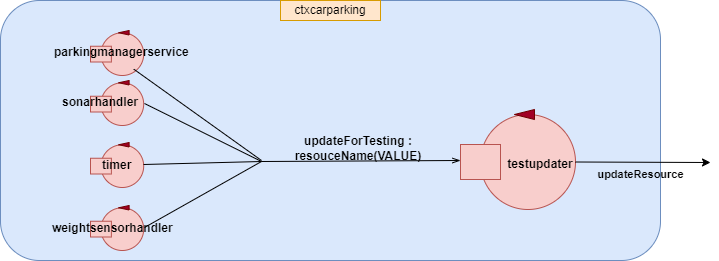

This document contains a general analysis of the customer requirements. Then we will proceed to organize the developing process using SCRUM methodology for agile and incremental development, also in order to propose a first prototype as soon as possible.
The requirements below are token from the file TFBO21ParkingISS
A company intends to build an automating parking service composed of a set of elements:|r, 0, 0, 0, 0, 0, 0, X, |0, 0,The map includes the positions of the parking-slots (marked above with the symbolX, X, 0, 0, 0, X, |0, 0,X, X, 0, 0, 0, X, |0, 0,X, X, 0, 0, 0, X, |0, 0, 0, 0, 0, 0, 0, X, |X, X, X, X, X, X, X, X,
After interviewing client, meanings he associates with nouns have been clarified:
Regarding to verbs:
Regarding to actions:
The goal of this section is to show a naive architecture of our system in order to have a better vision of the interactions between components that compose it. In this first schema, we still consider components of system as generic entities and we don't yet describe kind of their interactions.
Via the following picture, we want to propose a first architecture in which we describe also the nature of components, reserving the chooices about the type of interactions for future phases.
Most of our component should be QAktor, in order to get fast prototyping and executable model of the system.
As mentioned in the Introduction we will use SCRUM methodology, so this
paper will cover SPRINT 1.
So, during this phase, we will not consider some components and functionalities, in order to obtain, as
soon as possible, an executable model
which shows basic features of the system.
In this version are applied the simplifications below:
The components that are ignored or simplified will be fully implemented during future SPRINTs.
|
|
|
|
|
|
|
|
|
|
|
|
|
|
|
|
|
|
It is present a check, in order to verify if reqenter and pickup sended by a client can be accepted by parkingmanagerservice.
The reqenter will be accepted if:
The picking will be accepted if:
By requirements it's necessary to generate a UNIQUE TokenID that is uniquely linked to SLOTNUM. The TOKENID is a code composed by two parts: the first one is relative to a progressive number which increases every time it is accepted a reqenter request and the second one is relative to the SLOTNUM. So, in order to extract the SLOTNUM from the TOKENID, we have to extract the last digit.
The generated tokens are added to the knowledge base, in order to check if the inserted token during the pickup phase is wrong or not. While when a car is picked by a client his related TOKENID is deleted from this knowledge base.
When a pickup(TOKENID) message arrives to parkingmanagerservice, it's performed a
check that establishes
if the inserted TOKENID is valid (if it is present in the KB).
While when a car is picked by a client his related TOKENID is deleted from file.
It's necessary to introduce a knowledge base, to permit the system to know and modify the status of
parking slots and INDOOR and
OUTDOOR areas.
This knowledge base is written in prolog and it is used to
It was noted that it is not possible to edit the KnowledgeBase(encoded by the .pl file ) simultaneously by different actor because each time it is "opened" by a different actor, each actor creates its own copy and the changes remain local and not global. To overcome this problem, the following steps were considered:
During the project phase, it has proved necessary to have only a QAktor with the goal of updating all resources, so that the test part could detect them in a more organized and simpler way. So, whenever a component modifies any resource, a dispatch updateForTesting:resourceName(VALUE) is sent to testUpdater coded-actor. Then, this actor elaborates received messageand use it to update the corresponding resource.
|
Our system ParkingManagerService it's composed by seven Actors that we implement, will be of
|
|
|
This actor also triggers the activation of weightsensor and outsonar. |
It replaces, in this version, the role of the |
|
This mock-actor generates a random value that represents the weight of car in entrance and propagates it by emitting an event weight. It starts the simulation when perceives the |
|
|
This actor simulate a real sensor. It start the simulation when perceives When the outsonar detects the |
|
|
This actor is a simulator of a timer, it reacts to the startTimer and stopTimer messages sended by the sonarhandler and when the time will expire it emits an event |
|
|
|
|
In this test plan are considered only
In this test is initially checked if value of SLOTNUM is greater than 0
Subsequently the simulation is continued and controls that the value of the RECEIPT given from the system is greater or equals 11.
We want to check if, at the end of picking phase, the CARSLOTNUM value obtained from PICKUP request is greater than 0.
In this test at the start all the DOOR is occupied, so when the client send a reqenter request, so we want to check that the SLOTNUM value obtained as a waitIndoor reply, is greater than 0. After this control we set INDOOR-AREA FREE.
At the end when client want to pickup his car have to wait until OUTDOOR-AREA becomes free. When this happens the request is processed and CARSLOTNUM value is checked that it is greater than 0.
In this test there is not any free slot, so client must wait for at least one parking slot to become free. It's then checked that during this waiting Trolley returning home.
When a parking slot become free request is processed, but being INDOOR-AREA NOT FREE, so we go to check that SLOTNUM obtained from waitIndoor is greater than 0.
After those check simulation continue without problem and we are going to check if RECEIPT and CARSLOTNUM values are greater than 0.
In this test we want to check that after a bad pickup request sended by the client with a wrong value of the TOKENID, we check that CARSLOTNUM value is equals to -1.
So client must send another pickup request with correct TOKENID value and we check that CARSLOTNUM is greater than 0.
In this test we want to check that request sended by two different clients will be processed in order of arrival.
import alice.tuprolog.*
import org.junit.Assert.*
import java.net.UnknownHostException
import org.junit.BeforeClass
import cli.System.IO.IOException
import org.junit.Test
import kotlinx.coroutines.GlobalScope
import kotlinx.coroutines.launch
import kotlinx.coroutines.runBlocking
import kotlinx.coroutines.delay
import kotlinx.coroutines.channels.Channel
import it.unibo.kactor.QakContext
import org.junit.Before
import it.unibo.kactor.ActorBasic
import it.unibo.kactor.MsgUtil
import org.junit.AfterClass
import it.unibo.kactor.sysUtil
import it.unibo.kactor.ApplMessage
import org.junit.After
import kotlinx.coroutines.Job
import alice.tuprolog.*
object KBSupport {
var myactor : ActorBasic? = null
fun init(){
myactor = QakContext.getActor("parkingmanagerservice")
}
fun changeIndoorToOccupied(){
myactor!!.solve("occupiedindoor","")
}
fun changeIndoorToFree(){
myactor!!.solve("freedindoor","")
}
fun changeOutdoorToOccupied(){
myactor!!.solve("occupiedoutdoor","")
}
fun changeOutdoorToFree(){
myactor!!.solve("freedoutdoor","")
}
}
class testUpdater (name : String ) : ActorBasic( name ) {
@kotlinx.coroutines.ObsoleteCoroutinesApi
@kotlinx.coroutines.ExperimentalCoroutinesApi
override suspend fun actorBody(msg: ApplMessage) {
if( msg.msgId() == "updateGui" && msg.msgType() == "dispatch") {
update(msg.msgContent().replace("'",""))
}
}
fun update(res : String){
val resourceName = res.substringBefore("(","-")
val resourceValue = res.substringAfter("(","-").substringBefore(")","-")
updateResourceRep( "${convert(resourceName, resourceValue)}")
}
fun convert(name: String, value: String) : String {
val res = name.plus("(").plus(value).plus(")")
return res
}
}
|
 |
Tests is built using CoapObserver provided by the costumer in the project
In this test is initially checked if value of SLOTNUM is greater than 0.
Subsequently the simulation is continued and controls that the value of the RECEIPT given from the system is greater than 11.
We want to check if, at the end of picking phase, the CARSLOTNUM value obtained starting from pickup request is greater than 0.
fun testWorkflow(){
myactor!!.solve("occupySlot(1)","")
myactor!!.solve("occupySlot(2)","")
myactor!!.solve("occupySlot(3)","")
myactor!!.solve("occupySlot(4)","")
myactor!!.solve("vacateSlot(5)","")
myactor!!.solve("occupySlot(6)","")
myactor!!.solve("freedindoor","")
myactor!!.solve("freedoutdoor","")
runBlocking{
val channelForObserver = Channel
|
Test starts with a setup phase, in which is setted the system with required condition to perfoming current test. |
In this test, at the start of the system, both INDOOR and OUTDOOR are occupied. When the client sends a reqenter, we want to check that the SLOTNUM value obtained from waitIndoor reply, is greater than 0. After this control INDOOR-AREAem> is setted at FREE, simulating that a parking operation is gone well.
After that, client sends a carenter request because now INDOOR is FREE, and he receives his TOKENID.
After a certain period of time, client wants to pickup his car and so send pickup(TOKENID) request while OUTDOOR is OCCUPIED. After 3 seconds OUTDOOR is setted to FREE, and, if the system works well, client's pickup request is elaborated.
fun testWorkflow2(){
fun testWorkflow2(){
myactor!!.solve("occupySlot(1)","")
myactor!!.solve("occupySlot(2)","")
myactor!!.solve("occupySlot(3)","")
myactor!!.solve("occupySlot(4)","")
myactor!!.solve("vacateSlot(5)","")
myactor!!.solve("occupySlot(4)","")
myactor!!.solve("occupiedindoor","")
myactor!!.solve("occupiedoutdoor","")
runBlocking{
val channelForObserver = Channel
|
Like previous test, are used 3 observers for 3 resources updated by the system after elaborating respectively waitIndoor,
carenter and pickup requests. |
In this test there is not any free slot, so client must wait for at least one parking slot to become free. It's then checked that during this waiting Trolley returning home.
When a parking slot become free request is processed, but being INDOOR-AREA NOT FREE, so we go to check that SLOTNUM obtained from waitIndoor is greater than 0.
After that, simulation continues without problem and we check if provided TOKENID is greater then 11 and if CARSLOTNUM value is greater than 0.
fun testWorkflow3(){
myactor!!.solve("occupySlot(1)","")
myactor!!.solve("occupySlot(2)","")
myactor!!.solve("occupySlot(3)","")
myactor!!.solve("occupySlot(4)","")
myactor!!.solve("occupySlot(5)","")
myactor!!.solve("occupySlot(6)","")
myactor!!.solve("occupiedindoor","")
myactor!!.solve("freedoutdoor","")
runBlocking{
val channelForObserver = Channel
|
In this test are observed the same resources of previous test and one more toHome, bacause this test starts in the conditions of
the system have no free slot. So the system goes into the status |
In this test we want to check that, after entering an invalid TOKENID by client, the value of CARSLOTNUM will be equals to -1.
So client must send another pickup request with correct TOKENID value, then we'll check that CARSLOTNUM will be greater than 0.
fun testWorkflow4(){
myactor!!.solve("occupySlot(1)","")
myactor!!.solve("occupySlot(2)","")
myactor!!.solve("occupySlot(3)","")
myactor!!.solve("occupySlot(4)","")
myactor!!.solve("vacateSlot(5)","")
myactor!!.solve("occupySlot(4)","")
myactor!!.solve("freedindoor","")
myactor!!.solve("freedoutdoor","")
runBlocking{
val channelForObserver = Channel
|
In this test, it's performed a standard parking operation with sending of reqenter and carenter and receiving related replies. But in this case it's simulate that client sends an invalid TOKENID during picking phase and we check that the computed CARSLOTNUM is equals to -1. It's also checked thatif client enter a valid TOKENID, picking operation will go well. |
In this test we want to check that request sended by two different clients will be processed in order of arrival.
fun testWorkflow5(){
myactor!!.solve("vacateSlot(1)","")
myactor!!.solve("vacateSlot(2)","")
myactor!!.solve("vacateSlot(3)","")
myactor!!.solve("vacateSlot(4)","")
myactor!!.solve("vacateSlot(5)","")
myactor!!.solve("vacateSlot(4)","")
myactor!!.solve("freedindoor","")
myactor!!.solve("freedoutdoor","")
runBlocking{
val channelForObserver = Channel
|
In this test are deploy two actors which simulate two clients, they sends a reqenter almost togheter and it is verified if they are correctly processed.
|
fun testWeightsensor(){
runBlocking{
val channelForUnitTesting = Channel
|
fun testOutsonar(){
myactor!!.solve("freedindoor","")
myactor!!.solve("freedoutdoor","")
runBlocking{
val channelForUnitTesting = Channel
|